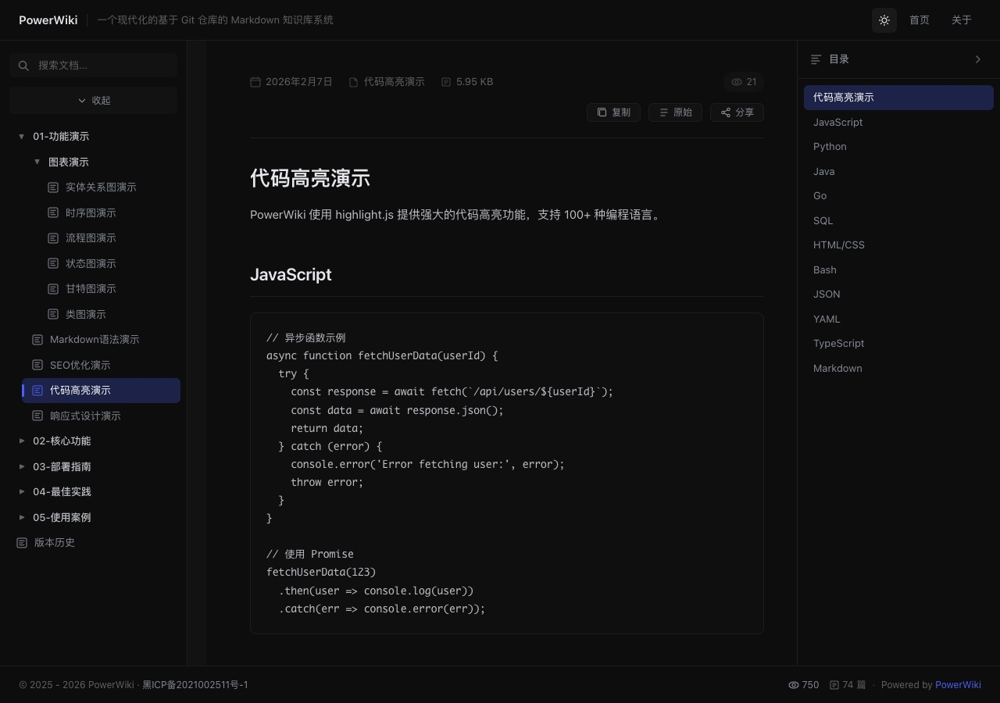

这个页面故意放了脚本、事件处理器和危险链接。渲染视图里它们全部被移除，写作 html.sanitize: true 的默认效果；切换到「原始」视图仍能看到源文件。
<script> 脚本块onclick、onerror 内联事件处理器style 标签与 style 属性javascript: 链接iframe 与表单控件data: 图片下面的按钮和区块在源文件里带有事件处理器，渲染后只剩普通文字：
图片的 onerror 被移除，图片本身照常显示：

下面这个链接的源文件地址是 javascript:，渲染后被移除，只剩文字：
非位图的 data: 图片会被丢弃：
iframe、表单这些整块标签不会进入正文。你可以点击工具栏的「原始」查看它们原本的样子。
只有在内容完全可控时，才应该关闭清洗：
{
"html": {
"sanitize": false
}
}旧的 "sandbox": false 仍然兼容，等价于上述配置。关闭后脚本和样式会原样进入文章，请只对自己的仓库使用。